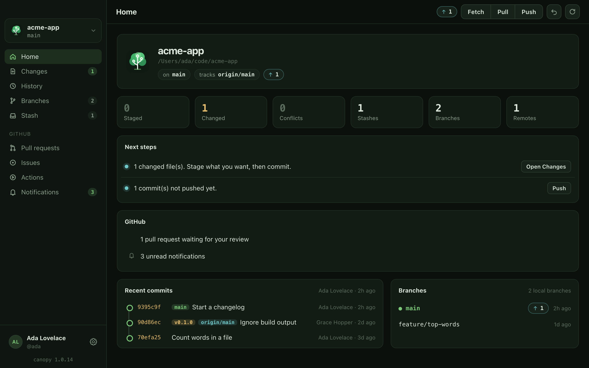
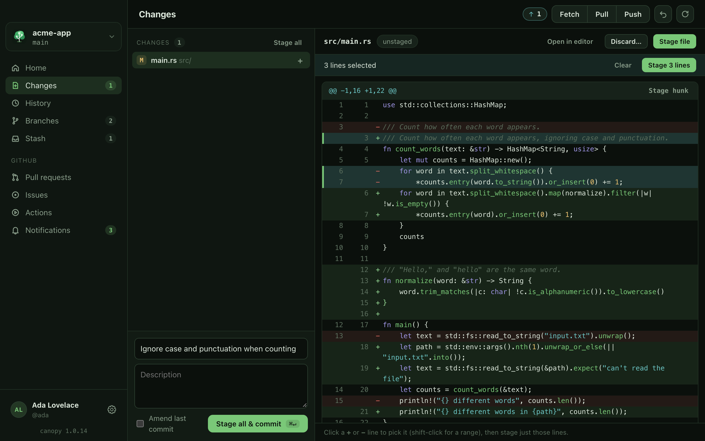
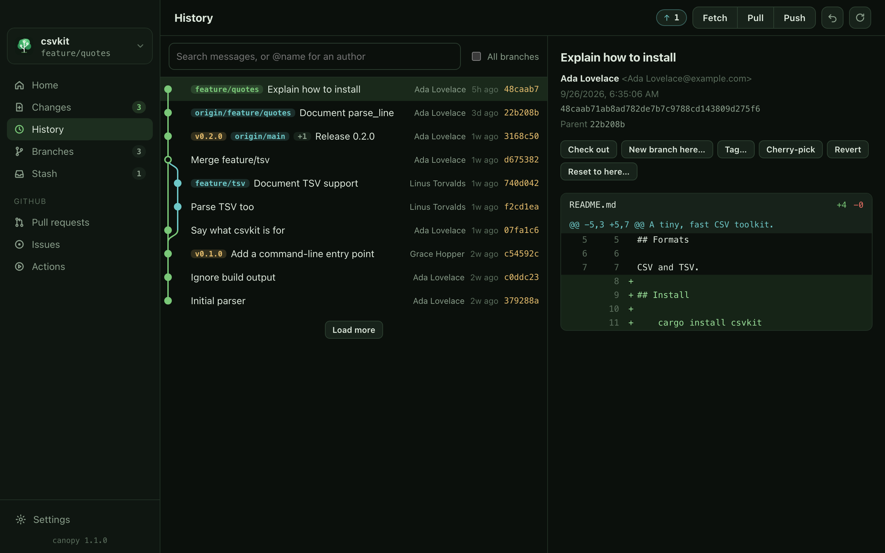
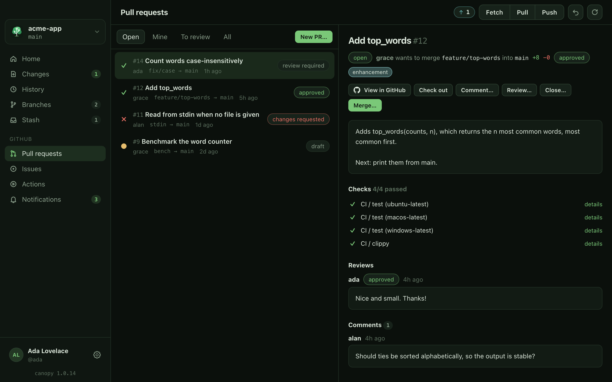
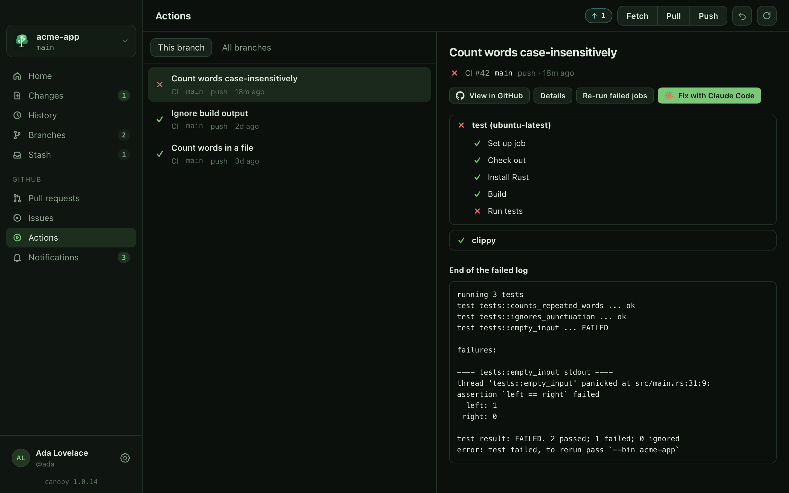
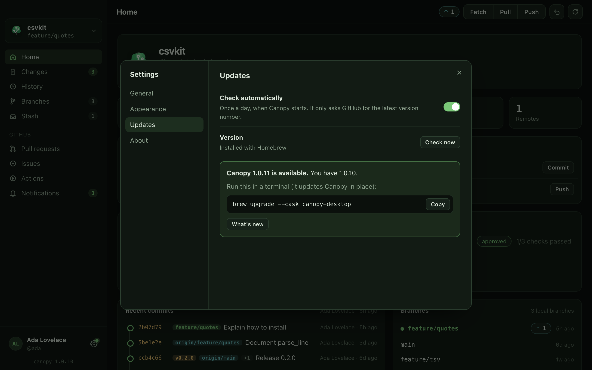
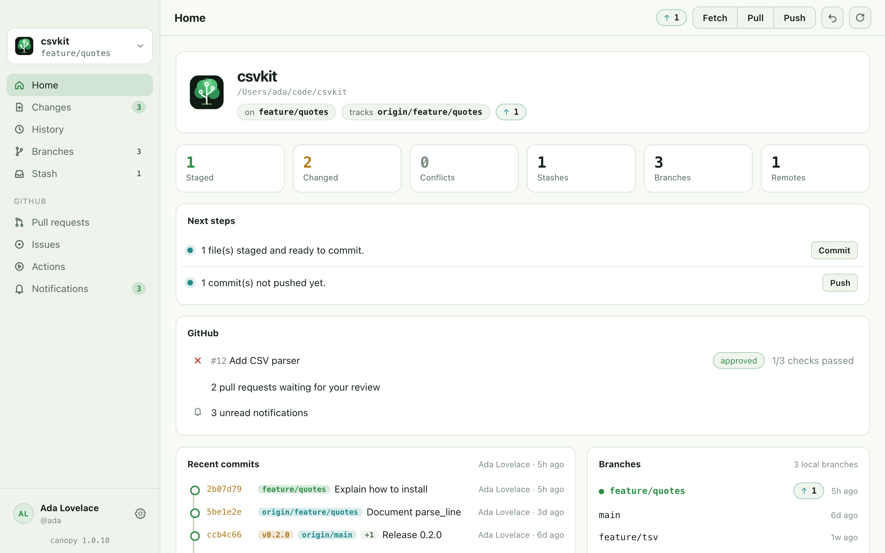

A release preview
xattr -dr com.apple.quarantine /Applications/canopy.app. Linux builds don't need any of this.The desktop app runs the real git and GitHub CLI on your machine, exactly like the terminal app. It never sends your code anywhere; the only thing it asks the internet for is the latest version number, once a day (you can turn that off).
Install
macOS, with Homebrew
$ brew install --cask shankar-sachin/canopy/canopy-desktop
That puts canopy.app in your Applications folder. Update it later with brew upgrade --cask canopy-desktop. Or download the .dmg for Apple silicon or Intel from the latest release.
Linux
Each release has a .deb (Debian, Ubuntu and friends) and an AppImage (any distribution) for x86_64:
$ sudo apt install ./canopy-desktop-v1.0.2-amd64.deb # or $ chmod +x canopy-desktop-v1.0.2-x86_64.AppImage && ./canopy-desktop-v1.0.2-x86_64.AppImage
From source
$ git clone https://github.com/shankar-sachin/canopy.git && cd canopy $ cargo run --release -p canopy-desktop -- ~/code/your-repo
On Linux this needs the WebKitGTK development packages (libwebkit2gtk-4.1-dev). Canopy Desktop needs git; the GitHub pages also use the GitHub CLI.
Already using the terminal app? Press ⌥D (or search "desktop" in the palette) and it hands you the install command.
Home
Where your branch stands, what's staged and changed, and next steps with a button for each: commit, push, pull, resolve. If this branch has a pull request, its checks and review are right there.

Changes
Staged, changed and conflicted files on the left; the diff on the right. Stage a whole file, a hunk, or just the lines you click (shift-click for a range). Write the message below and commit with ⌘↵. Conflicts get keep-mine / take-theirs buttons and a banner to continue or abort the merge.

History
The commit graph, drawn properly: merges, branches and tags. Search messages (or @name for an author), see any commit's full diff, and check out, branch, tag, cherry-pick, revert or reset from there. Branches and Stash have pages of their own, and Undo (⌘Z) reverses the last commit, reset or checkout.

GitHub
Pull requests with their checks, reviews and comments: check out, review, merge, comment, or open a new one from your branch. Issues, and Actions runs with each job's steps and the end of the failed log. It all goes through your own gh login.


Settings & updates
The gear at the bottom of the sidebar (⌘,): theme, whether to show the git command after each action, how often to refresh, what Pull does, and which git and gh Canopy found. Updates checks for a new version and shows the right command for how you installed it, like brew upgrade --cask canopy-desktop.

Light or dark follows your system, or pick one:

Windows
Canopy Desktop runs on Windows 11 (x64 and Arm). Install it with winget:
PS> winget install shankars.canopy-desktop
Or download canopy-desktop-v1.0.3-x86_64-setup.exe (or aarch64 for Arm) from the latest release. It installs for your user only, with no admin rights. The installer isn't code-signed yet, so Windows SmartScreen may say it doesn't recognize the app: click More info, then Run anyway. Update later with winget upgrade shankars.canopy-desktop.
Keys
| Key | Does |
|---|---|
| ⌘O | Open a repository |
| ⌘1–⌘9 | Go to a page |
| ⌘R | Refresh |
| ⌘Z | Undo the last commit, reset or checkout |
| ⌘↵ | Commit (in the message box) |
| ↑ ↓ / j k | Move through files and commits |
| space | Stage or unstage the selected file |
| / | Search History |
| ⌘, | Settings |
On Windows and Linux, use Ctrl instead of ⌘.